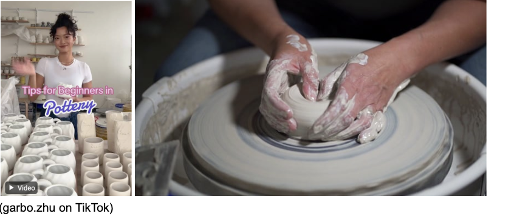
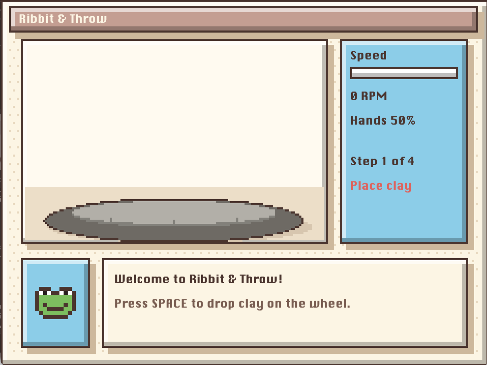
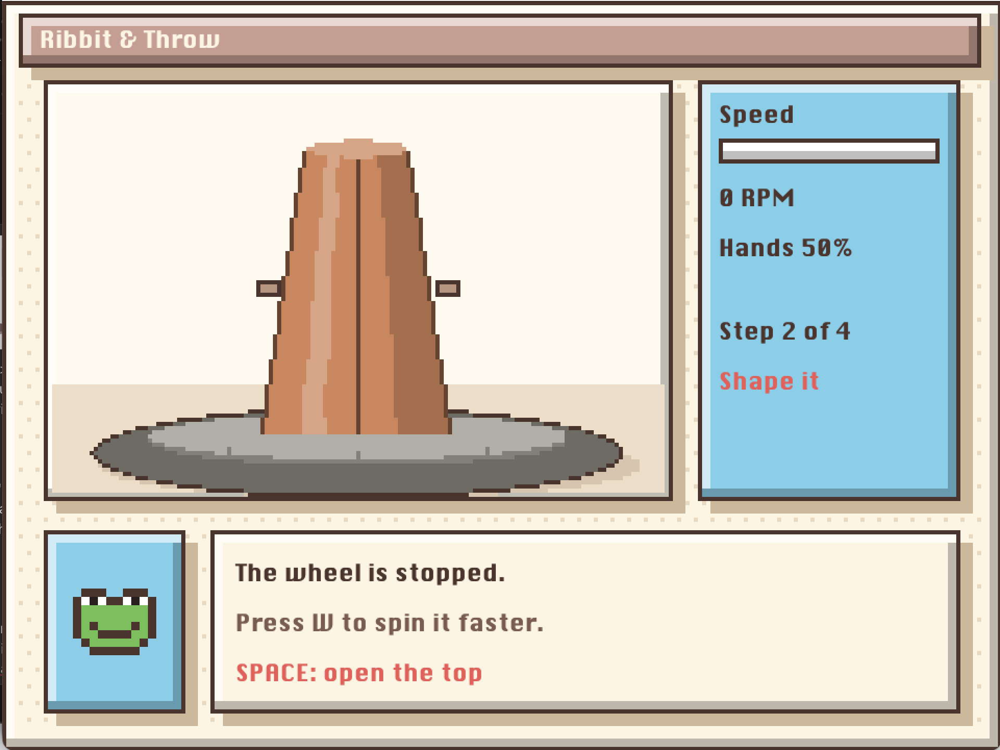
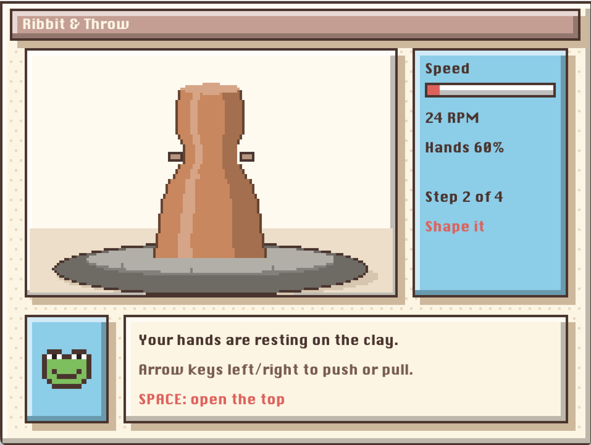
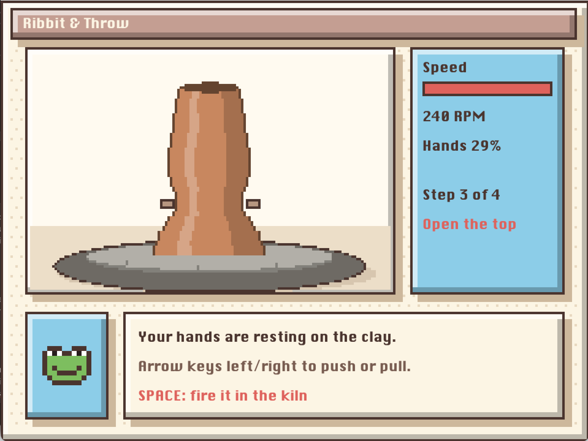
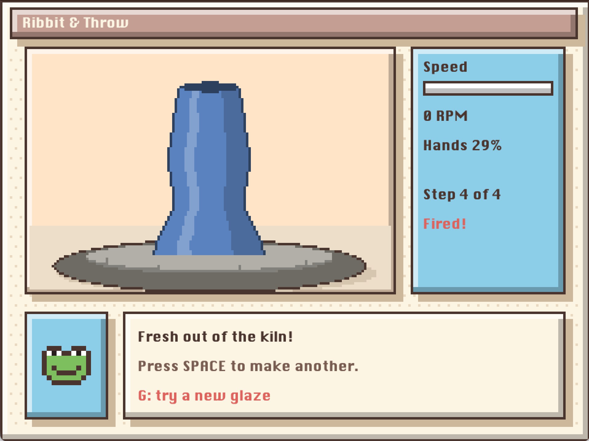
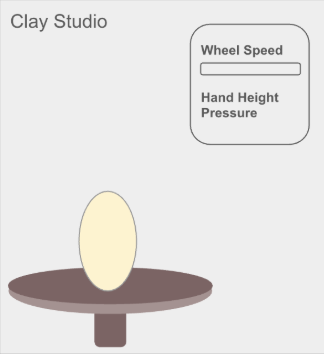
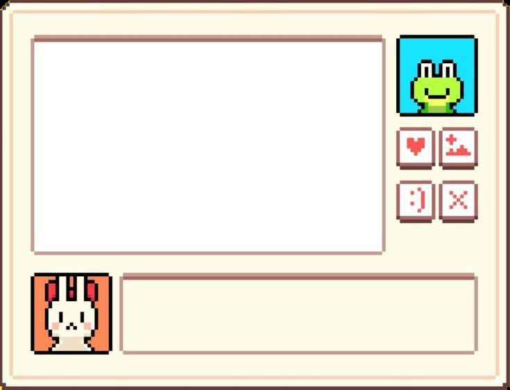

Ribbit & Throw: Pottery Simulator
Ribbit & Throw is a pottery simulator that imitates the process of making pottery, from shaping the clay on the wheel to firing the piece in the kiln. The experience is broken down into four main parts: placing the clay, shaping the clay, opening a hole at the top of the clay, and firing it. The visuals follow a pixel-art, game-like structure where a frog at the bottom of the screen gives instructions on how to move through the simulator. Similar to an HP bar or progress bar in a game, the panel on the right side shows the speed of the wheel, how high your hands are on the clay, and what step the player is on. The name comes from "throwing," which is what potters call shaping clay on the wheel, paired with the frog that guides you through it.
For this project, I specifically used an ESP32 T-Display with soldered headers, a breadboard, a button, a joystick, a potentiometer, female-to-male wires, and jumper wires to connect everything to the power and ground rails. I coded the ESP32 in the Arduino IDE so that it reads all of the inputs and sends them to the computer, and the visuals themselves are drawn in Processing. I also used paper and tape to build the controller that the hardware sits inside.
To give more background on pottery itself, the real process involves quite a few more steps than what is shown in the simulator. At a high level, it includes choosing your clay, wedging it (kneading the clay against the table), centering it on the wheel, shaping it, letting it stiffen to leather hard, trimming and attaching any extra pieces like handles, keeping the clay loosely covered while it dries, bisque firing, and finally waxing and glazing before a second firing. To match the simplicity of the interactive inputs with the actual process, I tried to take the main parts of it that are the most recognizable and the most satisfying to watch.
Design Decisions
While creating the interactive pottery simulator, my decisions can be broken into multiple stages of the project.
1. Interactive Media
When I heard the goal of the project, which was to create an interactive device with the provided hardware, the first thing I thought of was different processes and art forms that are very hands-on and visual. This led to pottery. When we first received the hardware in class, the button and the joystick were very satisfying to play around with, so I wanted to carry that same feeling into the visuals that would be changing along with the hardware.
While I've never done pottery myself, I've always enjoyed watching pottery artists turn a shapeless blob of clay into intricate, fun shapes. I especially love pottery ASMR on Instagram and TikTok reels. There is something very satisfying about watching the clay rise and curve on the wheel, and I wanted to bring that onto my screen and feel like I'm making the pottery myself through the hardware. Another reference that stuck with me was from the very first class, where we learned about how 3D printing was being used to make pottery. It made me think about how the same craft could be done with a machine or a joystick in my case.

2. How would I make the simulator as close to pottery as possible?
Each input on the controller was matched to something a potter actually does with their hands or the wheel. The potentiometer acts as the foot pedal that controls how fast the wheel spins, the joystick acts as your hands on the clay, and the button moves you on to the next step.
Placing the clay
The first step is placing the clay, which happens when you press the button. The default shape of the clay is a rounded lump that is a little wider at the bottom and narrower at the top, to represent what real clay looks like when it is first slapped onto the wheel before any shaping happens. At this point, the frog tells you to turn the knob to start spinning the wheel.


The empty wheel (left) and the clay after it is placed (right)
Shaping the clay
How the shaping of the clay would look was a big design decision, since it is the main part of the whole experience and I had to make sure it looked as good as possible. I decided to break the clay up into 34 rings stacked on top of each other, where each ring stores how wide the clay is at that height. This is actually close to how real pottery works, since everything on the wheel is round and the only thing that changes is how wide or narrow the clay is at each height.
Moving the joystick up and down moves your hands up and down the clay, and moving it left or right pushes the clay in or pulls it out. Pushing in makes the clay narrower where your hands are, and pulling out makes it wider. Just like a real wheel, the clay only changes while the wheel is spinning, and spinning it faster makes the clay change faster too. Two small pixel hands show where you are touching the clay, so the player always knows which part they are about to shape.

Pushing the clay in near the top (left) and pulling it out at the bottom (right)
Making a hole at the top of the clay
Pressing the button again opens the top of the clay. In real pottery, this is when the potter presses their thumbs into the center to start turning the solid lump into a bowl or a vase. In the simulator, the top of the clay turns dark to show that it is now hollow, and the player can still keep shaping the sides. I kept this step simple on purpose, since it is mostly there to make the piece feel like a real hollow piece of clay.

Firing the clay
The last press of the button fires the piece in the kiln. The background glows a warm orange to feel like the heat of the kiln, and the clay changes from its raw brown color to a glaze color that is picked randomly from four options. I also used the press of the joystick here, so clicking down on it tries a new glaze, the same way a potter might test different glazes before choosing one. Pressing the button one more time clears the wheel so you can make another piece.

3. The look of the game
For the visuals, I wanted it to feel cozy, like a small pixel-art game, instead of a flat drawing. I first tried a more realistic version, but it felt too plain, so I switched to pixel art with natural, earthy colors to match the clay. Every panel has a light edge on the top and left and a darker edge on the bottom and right, with a small shadow behind it, which makes the boxes look raised like buttons in a game. For the border and panels, I used this pixel-art design from Pinterest as inspiration. I also went through a few mascots before landing on the frog, which I kept simple so it would not take attention away from the wheel.

From my initial sketch (left) to the final pixel-art design (right)

Technical Implementation
ESP32 reads the hardware and Processing controls the visuals.
Arduino (ESP32)
At the top, I gave each pin a name so I wouldn't have to remember each individual pin number. The joystick has three pins which are left+right, up+down, and the press, and then there is one pin for the potentiometer and one for the button.
#define JOY_X 39
#define JOY_Y 32
#define JOY_SW 33
#define POT_PIN 36
#define BUTTON_PIN 2
In setup(), the joystick press and the button are set to INPUT_PULLUP. This
means the pin reads 1 when nothing is happening and 0 when it is pressed, so I didn't need any extra
resistors on the breadboard. Serial.begin(115200) starts sending data to the laptop at a
set speed, and this number has to match the one in Processing or nothing will come through.
void setup() {
pinMode(JOY_SW, INPUT_PULLUP);
pinMode(BUTTON_PIN, INPUT_PULLUP);
Serial.begin(115200);
}
Each time loop() reads the joystick and the potentiometer with
analogRead, which gives a number from 0 to 4095 depending on how far it is turned or pushed,
and reads the joystick press and button with digitalRead which only gives 0 or 1. The
potentiometer is read twice and only the second reading is kept, since the first one would sometimes
pick up leftover signal from the joystick. Then Serial.printf sends all five values as one
line separated by comma. At the end, you'll see the delay(30), which makes it fast enough for the clay to feel natural.
void loop() {
int x = analogRead(JOY_X);
int y = analogRead(JOY_Y);
int sw = digitalRead(JOY_SW);
analogRead(POT_PIN);
int pot = analogRead(POT_PIN);
int btn = digitalRead(BUTTON_PIN);
Serial.printf("%d,%d,%d,%d,%d\n", x, y, sw, pot, btn);
delay(30);
}Processing
The clay as rings
The most important variable is the clay itself. The clay is stored as a list of 34 numbers, where each number is how wide the clay is at that height, starting from the bottom. Every time you shape the clay, the code is really just changing these numbers and the drawing follows them.
int rings = 34;
float[] clay = new float[rings];setup() and draw()
setup() makes the window, turns off smoothing with noSmooth()
so the pixels stay sharp, picks the font, and connects to the ESP32 using the port it is plugged into.
draw() runs every frame and is kind of the main loop of the whole game. First it reads
every line the ESP32 has sent so far, splits it at the commas, and passes the five numbers into
readSensors(). If only half a line has arrived, it stops and waits for the rest in the next
frame. Then it updates the clay and draws everything.
while (myPort.available() > 0) {
val = myPort.readStringUntil('\n');
if (val == null) break;
val = val.trim();
int[] data = int(split(val, ','));
if (data.length == 5) readSensors(data[0], data[1], data[2], data[3], data[4]);
}
To get the pixel-art look, everything is drawn very small first, at 240 by 180 pixels. Then
get() takes a picture of that small area and image() draws it four times bigger
to fill the window. Since smoothing is off, each tiny pixel turns into a sharp 4 by 4 square instead of
getting blurry. The text is drawn after this step at full size, so it stays crisp and easy to read.
PImage small = get(0, 0, W, H);
image(small, 0, 0, W * SCALE, H * SCALE);
drawText();readSensors()
This function turns the raw numbers from the ESP32 into things the game understands. The joystick
left/right is changed from 0 to 4095 into -1 to 1 with map(), where -1 means pushing in
and 1 means pulling out. In case the jostick isn't perfectly in the middle, anything really close to
the center is treated as 0 so the clay doesn't slowly change by itself. Up/down slowly moves the hands
up and down the clay. The potentiometer becomes the wheel speed from 0 to 1, and anything under 250
counts as stopped so the wheel actually stops when the knob is all the way down.
For the button, I only wanted it to go to the next step once per press, not every frame while it is
held down. So the code remembers what the button was last time and only calls nextStep()
at the exact moment it goes from not pressed to pressed. The joystick press works the same way,
and only tries a new glaze after the pot is fired.
if (button == 0 && lastButton == 1) nextStep();
lastButton = button;
if (sw == 0 && lastSw == 1 && step == 3) pickGlaze();
lastSw = sw;nextStep() and pickGlaze()
The whole game keeps track of which step you are on with one number, where 0 is the empty wheel, 1 is
shaping, 2 is the opened top, and 3 is fired. nextStep() adds one to it and goes back to 0
after the last step. When it moves to step 1, it fills in the starting lump of clay, where each ring is
a little narrower than the one under it. When it moves to step 3, it calls pickGlaze(),
which picks one of four glaze colors at random and keeps picking until it gets one that is different
from the last one, so pressing the joystick always shows a new color.
for (int i = 0; i < rings; i++) {
clay[i] = 22 - i * 0.3;
}updateClay()
This is the function that actually shapes the clay and it only runs while you are shaping and the wheel is spinning. First, it figures out which ring your hands are on. Then, for every ring, it calculates a "closeness" number, which is 1 right at your hands and goes down to 0 four rings away. Each ring changes by how hard you are pushing, times how fast the wheel is spinning, times how close it is to your hands. This is what makes the clay curve around your hands instead of only one ring moving. The clay is also kept between a smallest and biggest width so it can't disappear or grow off the wheel.
float closeness = max(0, 1 - abs(i - handRing) / 4.0);
clay[i] = clay[i] + push * 0.35 * speed * closeness;
clay[i] = constrain(clay[i], 5, 60);
After that, each ring is blended a tiny bit with the average of the ring above and below it using
lerp(). The 0.02 means it only moves 2% of the way each frame, which keeps the shape smooth
without flattening it out too fast. I was able to specifically adjust this number with trial and error.
float average = (clay[i - 1] + clay[i + 1]) / 2;
clay[i] = lerp(clay[i], average, 0.02);drawWindow()
This draws the background of the game: the cream window, a small dot pattern, the title bar, the studio wall (which turns orange once the pot is fired), the stats panel, the speed bar, and the frog box. The dot pattern shifts over every other row so it looks like a checkerboard of dots. The frog is drawn from a list of short words, where each letter stands for a color, like X for the outline, G for green, and K for the eyes. The code goes through each letter and draws a 2 by 2 square in that color, so I could design the frog like a pixel drawing right inside the code.
String[] frog = {
".XXX..XXX.",
"XWKWXXWKWX",
"XGGGGGGGGX",
...
};drawClay()
This goes through all 34 rings and draws each one as a thin strip, 2 pixels tall, as wide as that ring's number. Each strip has a dark outline, the main clay color, a light spot on the left, and a shadow on the right, which together make the clay look round. A thin dark streak also slides across the clay as the wheel turns to make it look like it is spinning. The top of the clay is an oval that turns dark once the top is opened. When the pot is fired, the main color switches from brown to the glaze color. Lastly, it draws the two hands on either side of whichever ring you are touching.
label() and drawText()
label() lets me place text using the same small 240 by 180 positions as the pixel art, and
it multiplies them by 4 so the text lines up with the blown-up drawing. drawText() writes
the title, the speed, how high the hands are, and the step you are on. It also writes the frog's
message, which changes depending on what you are doing. For example, if the wheel is stopped it tells
you to turn the knob, and if you are pushing in it tells you the clay is getting narrower. This way the
frog is always reacting to what the player is doing with the controller.
Technical Challenges
The first challenge was the shaping itself. Initially, only the one ring at the hands would move, which left a sharp dent and did not look natural at all. Real clay pulls along the clay around it, so I added a "closeness" number that makes the rings closest to the hands change the most and the rings a few steps away change less and less.
// before
clay[handRing] = clay[handRing] + push * 0.35 * speed;
// after
float closeness = max(0, 1 - abs(i - handRing) / 4.0);
clay[i] = clay[i] + push * 0.35 * speed * closeness;Each ring is also blended a little with the rings above and below it so the shape stays smooth. At first this happened too fast and the clay would straighten itself back out almost right away, so I lowered the number from 0.1 to 0.02 until the shape held for longer but still had smooth curves.
clay[i] = lerp(clay[i], average, 0.02); // was 0.1I was initially going to make this in 3D in Processing, but instead decided to rely on the stack of rings and pixel art in 2D. A 3D version would have needed a lot more code, and the side view of the clay is what you actually watch in pottery videos anyway.
Another challenge was the hardware. For a while the potentiometer was always reading 0, and it turned out the legs were in the same row on the breadboard and then connected to the wrong rail. Once that was fixed, the value would jump around whenever I moved the joystick, because the ESP32 reads all of the pins through the same converter. Reading the potentiometer twice and only keeping the second reading fixed this, and treating anything under 250 as 0 made the wheel fully stop when the knob was all the way down.
analogRead(POT_PIN);
int pot = analogRead(POT_PIN);Design Recommendations
My first design recommendation is to find inspiration in the feeling the hardware gives you. The button, potentiometer, and joystick can provide both simple and complex interactivity, and finding a mix of both is what matters in my opinion. Matching each input to an action that feels natural, like a knob for the wheel speed and a joystick for your hands, makes the controls much easier to learn without needing many instructions. I would also recommend testing each piece of hardware on its own in the Serial Monitor before connecting it to the visuals, since most of my problems came from wiring and not from the code. Lastly, don't be afraid to keep adjusting the numbers, since small changes like how fast the clay smooths out made the biggest difference in how real it felt.
Link to github repository can be found at the top of the page